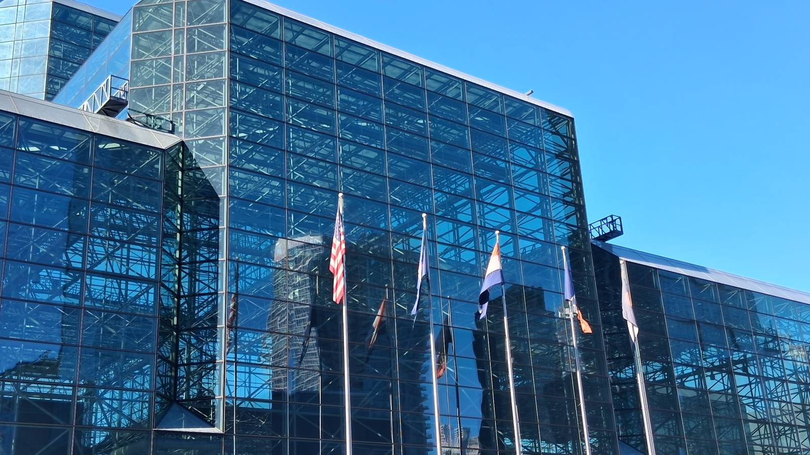

Venue · Convention centre
Jacob K. Javits Convention Center
- Type
- Convention centre
- Location
- New York City, United States
- Address
- 655 W. 34th Street, New York, NY 10001
- Halls
- Official about page: 3.4 million total square feet across two buildings; 500,000+ square feet of contiguous exhibit space and 122 flexible meeting rooms
- Official website
- https://www.javitscenter.com/
About
New York’s principal convention centre on Manhattan’s West Side, operated by the New York Convention Center Operating Corporation. The official about page gives 3.4 million total square feet for the campus and more than 500,000 square feet of contiguous exhibit space, but not a precise all-halls exhibit total, so exhibition_sqm is left null. Coordinates are the atlas precise pin.
Upcoming events
- NRF 2027: Retail's Big ShowNew York City, United StatesExpos
- The AI Summit New York 2026New York City, United StatesAI
- New York Boat Show 2027New York, United StatesBoat & Yacht
Sources
- Official source — https://www.javitscenter.com/about
- Official source — https://www.javitscenter.com/